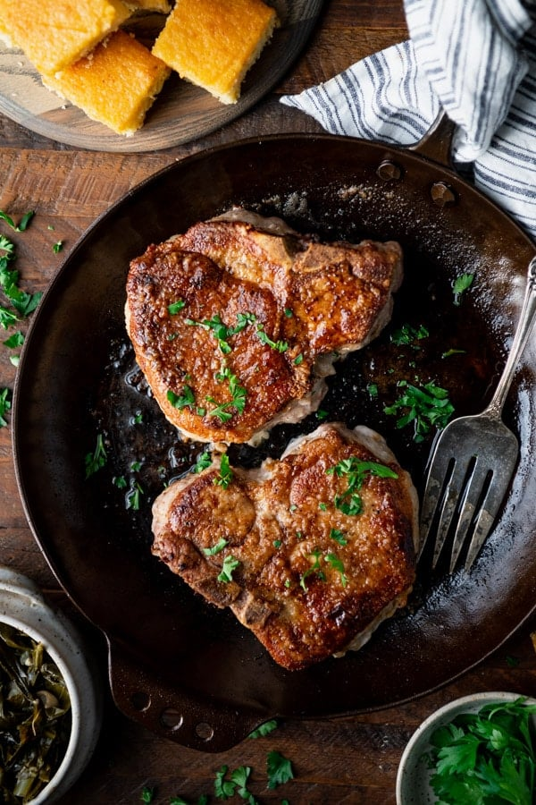

Pan Fried Pork Chops Recipe

Recipe found here
Ingredients
- 4 boneless pork chops, 3/4-inch thick.
- Salt and freshly ground black pepper
- 2 tablespoons of all-purpose flour
- 1/2 cup cooking oil
Directions
-
Do not pat pork chops dry,
so seasoning and flour will stick
-
Season both sides of pork chops with salt and pepper,
then sprinkle with flour on both sides.
Use the back of a spoon to distribute the flour over
the entire surface.
-
Heat oil in a 12-inch non-stick skillet over medium heat
until it simmers. Carefully add pork chops and pan fry until
brown (about 4 mins). Do not disturb the pork chops until
ready to turn.
-
When you see the edges of the chops turn brown,
turn the chops over, and pan fry the other side until they
are no longer pink on the inside and brown on the outside
(about another 4 mins). An instant-read thermometer inserted
into the center should read 145 degrees Farenheit. Reduce heat
if they are browning too quickly. Serve warm